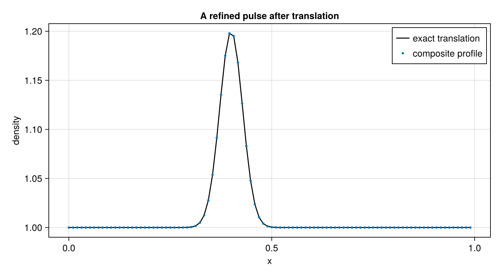

Follow a moving feature with refinement
Adaptive mesh refinement (AMR) concentrates grid points where a calculation needs them. This example advects a smooth density pulse at uniform velocity and pressure. Its exact solution is a translation, so the physical feature and the refinement policy can be checked independently.
using CompactLES
MPI.Initialized() || MPI.Init(threadlevel=:funneled)
using CairoMakie
CairoMakie.activate!(type = "png")
speed = 0.5
center(t) = 0.30 + speed * t
density(x, t) = 1 + 0.2 * exp(-((x - center(t)) / 0.04)^2)
problem = Problem(
name = "advected density pulse",
domain = ((0.0, 1.0), (0.0, 1.0), (0.0, 1.0)),
bcs = (PeriodicBC(), PeriodicBC(), PeriodicBC()),
ic = (x, y, z) -> Prim(rho = density(x, 0.0), p = 1.0,
u = (speed, 0.0, 0.0)),
)Problem "advected density pulse"
domain: (0.0, 1.0) × (0.0, 1.0) × (0.0, 1.0)
metric: CartesianMetric
EOS: IdealMixture (1 species)
boundary conditions: PeriodicBC / PeriodicBC, PeriodicBC / PeriodicBC, PeriodicBC / PeriodicBC
sources: noneSelect refinement in physical coordinates
AMR belongs to Numerics: it describes how the problem is resolved. The predicate below selects nodes within 0.09 of the moving center. It does not depend on the root-grid node count. The selected nodes are buffered and enclosed in a rectangular patch; the patch need not have exactly the shape of the predicate's region.
The default density sensor is disabled here with tag_threshold = Inf to isolate the prescribed motion. initial = :sensor would instead select the initial cover using the configured sensors. Predicate and sensor criteria are combined by union when both are enabled.
amr = AMR(
initial = (x, y, z, t) -> abs(x - center(t)) < 0.09,
tag_threshold = Inf,
tag_buffer = 4,
regrid_interval = 4,
subcycle = true,
)
numerics = Numerics(
n_global = (96, 1, 1),
amr = amr,
art = ArtParams(enabled = false),
filter_interval = 0,
cfl = 0.35,
)
solver, states = setup(problem, numerics)
initial_cover = level_regions(solver, 1)
refresh_primitives!(solver, states)
initial_mass = volume_integral(solver, [copy(ps.rho) for (ps, _) in eachpatch(solver, states)])1.0141796597479726There are two levels: the root covers the whole domain, and the refined level has three times its spatial resolution. subcycle = true advances that level in three substeps per root step. Removing it uses one common timestep constrained by the whole hierarchy. With regrid_interval = 0, the initial cover stays fixed instead of following the pulse.
At setup the IC is evaluated on each level's own nodes. During regridding, new fine nodes receive interpolated evolved data; the IC is not reapplied.
tfinal = 0.20
run!(solver, states; tfinal, nmax = 2000)
@assert solver.t == tfinal
final_cover = level_regions(solver, 1)
(initial_cover, final_cover)(BlockRegion[BlockRegion((17, 0, 0), (25, 1, 1))], BlockRegion[BlockRegion((26, 0, 0), (26, 1, 1))])Read the composite solution
Pass the entire state vector to diagnostics. Selecting states[1] would omit the fine solution. Refresh the primitive fields, then give plane_profile one density array per local patch. It combines level contributions at root-grid stations, so this plot compares profiles on a common sampling grid rather than displaying every fine node. All ranks must enter the profile and integral reductions.
refresh_primitives!(solver, states)
density_fields = [copy(ps.rho) for (ps, _) in eachpatch(solver, states)]
x = profile_coordinate(solver, 1)
rho = plane_profile(solver, density_fields, 1)
final_mass = volume_integral(solver, density_fields)
relative_mass_change = (final_mass - initial_mass) / initial_mass
exact = density.(x, tfinal)
fig = Figure(size = (760, 420))
ax = Axis(fig[1, 1], xlabel = "x", ylabel = "density",
title = "A refined pulse after translation")
lines!(ax, x, exact, label = "exact translation", color = :black)
scatter!(ax, x, rho, label = "composite profile", markersize = 5)
axislegend(ax)
fig
The relative mass change is a second diagnostic of interface and transfer errors, complementary to the profile comparison:
relative_mass_change-1.2721119608944356e-8AMR adds interpolation and interface errors as well as resolution. The implementation has no conservative refluxing, which would correct the coarse and fine fluxes to share one conservation budget. Check composite mass and energy in addition to profile error for a production calculation. Adaptive mesh refinement describes sensor initialization, nested levels, tiling, checkpoint/restart, and the current support limits.
This page was generated using Literate.jl.